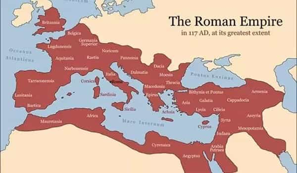
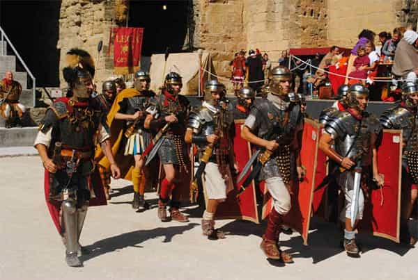
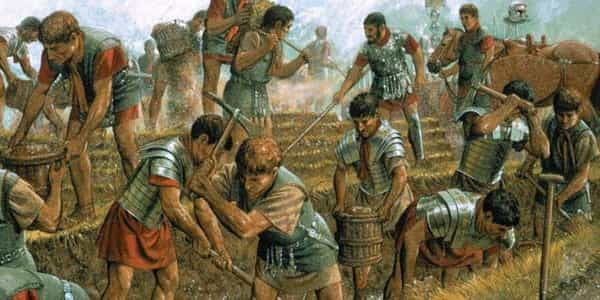
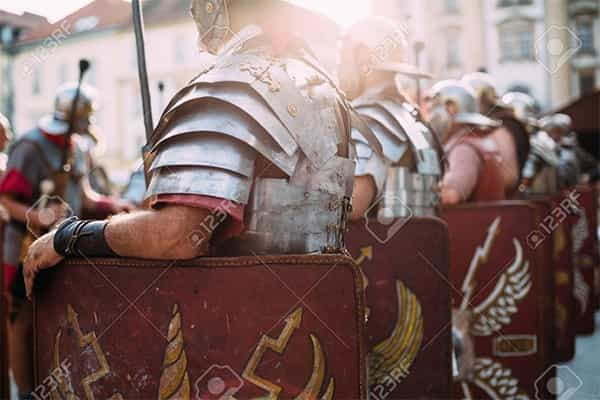

André is a young European who left his decaying country in 2012 for greener pastures. He enjoys exploring subterranean places, reading about a host of interconnected topics, and yearns for Tradition.


If we want patriarchy and sanity back, or in other words if we want a return of kings, a great source of inspiration can be found in history.
The Roman Empire was created by two itinerant brothers, Romulus and Remus, and their pals. Courageous and united, these were able to get some land but lacked women. Rejected by men from neighboring tribes when they asked them for wives, they took them by force. They had a right to a future, upheld it, and secured it by beating the other tribes.
Eventually, a lot of wars followed. Rome expanded—again and again. Romans were sometimes defeated but always managed to get back on track. It took centuries, but ultimately, Rome became an enormous empire which included a quarter of the whole world population at its peak.

Those who fought on the ground for this expansion are today mostly known through movies, where they are sometimes confused with gladiators, and historical video games. How did they live to conquer like they did? According to two French physicians who reviewed evidence on their regimen, they lived like athletes.
The first thing a legionary had to know was not how to fight, but how to endure. Legionaries had to walk with an individual load called sarcinae that contained weapons, construction tools, cooking instruments, food rations for days, and clothes. All this weighted between 75 and 100 lbs. Once a week, legionaries had to undergo an 18 miles long testing walk across the country carrying all their equipment.
Only after centuries of a burgeoning empire would the supply networks become more secure. Julius Caesar (100-44 B.C.) then reduced the load to 45lbs per man, improving his legions’ maneuverability, yet he maintained the test and training walks with the original load.
At a time when only a handful of rich men could go to war on horseback, legionaries were first and foremost incredible walkers. They acquired an intimate knowledge of their country by treading on it most of the time. Hiking 15 miles a day was not uncommon.

In times of war, forced march could come in as well: Crassus’ (115-53 B.C.) legions once walked 23 miles without stopping, while Caesar’s stepped 28 miles—and later carried out the prowess of treading 46 miles in 24 hours, without their usual load, but with just one 3-hour break.
When legionaries reached their goal, if they didn’t have to fight anyone, they still had to build their camp with trenches and wood fences.
Only after they had proved their endurance would young legionaries be taught how to use their weapons. They would use a wicker shield and a wood spade first, then would throw weighted javelins and heavy stones before starting training with real weapons.
Intelligent legionaries were also trained to be engineers. These would build wood towers, catapults, ballistas. Physical fights were highly important, of course, but not that crucial: legionaries could walk incredible distances, build pretty advanced stuff, dig trenches around besieged cities as to make any counter-attack useless. They were enduring masters of their environment, both in their ability to tread it and change it up to their aims, before being fighters.

When they didn’t have to either fight or hike, legionaries were frequently tasked with building roads, bridges, channels and even cities. This was certainly good for Rome’s economy, but it also provided strength training. As the saying went, “handling stone makes the body stronger.” Pretty rustic, but more efficient than C4 pre workout and tons of hyped-up supplements. Once, waiting for the arrival of barbarian tribes for months, legionaries spent their time building the Canal de Fos near Arles (south of France).
As for their diet, legionaries ate in proportion to their strain. They had two meals a day, the first one (prandium) by the morning and the second (cena) by the evening. According to several estimations, the breakfast incorporated roundly 1.8lbs of wheat with a bit of cheese, a handful of lard and a generous portion of wine. This meant roundly 3500 calories on the morning plus the cena, amounting to more than 5000 calories a day save for scarcity times—a diet plan Michael Phelps, or any pro athlete, would be familiar with.
Mostly based on wheat, the standard legionary’s diet was uneven: 78% carbohydrates. They strongly lacked protein. To reequilibrate their diet—and likely avoid consuming their rations too fast—they didn’t use whey protein, but hunted and foraged as much as they could. Archaeological digs near camps in England and Germany have shown bones of pigs, beef, sheep, goats, wild boars, deer, venison, and even beavers, wolfs, bears and foxes. Just like baboon-eating Rhodesian Selous Scouts, legionaries knew what it was like to be hungry.

Overall, legionaries were all-around masculine men. They knew how to use their spades and shields for sure, and paintings still depict their square group formations. However, had they only mastered this, other peoples such as the Greeks would have nothing to envy. Legionaries won against all kinds of enemies, including the Greeks, because of how enduring, field-knowledgeable and environment-changing they were.
Brutes with no discipline may win for some time but always end up fighting each other or losing their shape. Organized, well-trained legionaries, topped with engineers? Not so much. Tall Gauls once laughed of “Marius’ mules” because of how much weight the legionaries had on their backs—and likely because Mediterranean Romans were smaller—but still got their ass kicked and were forced into speaking Latin.
Again and again, the same qualities and behaviors ensure victory. It takes a good organization, not to mention morale and self-trust, to succeed as a group. Just ask the Chinese. Likewise, the group must be made of worthy and/or exerted individuals to succeed.
The Gauls were stalwart men, more used to continental winters than their southern neighbours, but they kept quarrelling, and whereas their genetics is still there their Celtic language was mostly wiped out. Roman culture, on the other hand, still echoes today. And plenty of Roman buildings still stand all over southern Europe.
There is no shortcut to hard and smart work. No matter if we consider ourselves as individuals or a group, or both when, say, we start building a company, this makes a difference in the long run.
Read Next: The Roots Of Masculinity In Ancient Rome